Dog Assisted Interventions met handler Anne-Frouk en hond Rosie
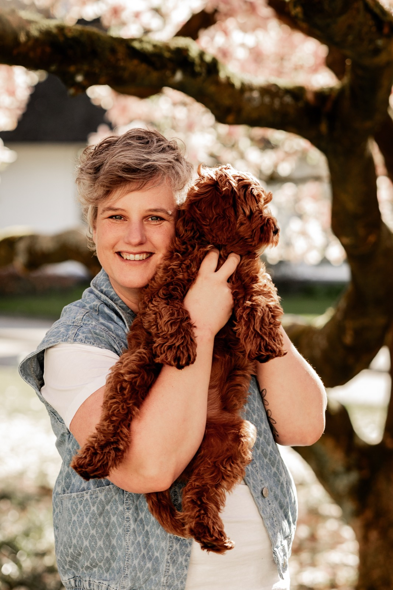
Photography by Kim Hildering
Een team van handler en hond, met een achtergrond in zorg én welzijn.
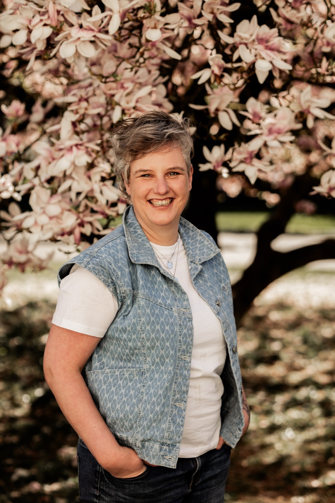
Photography by Kim Hildering
Professionaliteit in zorg & welzijn.
Mijn naam is Anne-Frouk de Goede. Met diploma's als doktersassistente en maatschappelijk werker combineer ik het beste uit de medische wereld en de welzijnswereld. Hierdoor lukt het vaak om goed aan te sluiten bij de belevingswereld van allerhande mensen die ik tijdens mijn werk ontmoet.
Sinds een kleine drie jaar werk ik met veel plezier als ambulant hulpverlener bij het Leger des Heils. Hier werk ik met parels van deelnemers. Vaak spelen er op meerdere levensgebieden allerhande ingewikkelde dingen en is het niet altijd makkelijk om contact te maken.
Nadat ik bij een deelneemster echt niet meer binnenkwam, ben ik gaan nadenken over wat ik nog meer zou kunnen inzetten om haar te bereiken. Tegelijkertijd ontstond bij mij de wens om meer met onze labradoodle Rosie op te trekken.
Zo kwam ik op het spoor van Mandy van Laar en de DAI Academy. Haar filosofie en ideeën spraken me aan en passen bij het werk van het Leger des Heils. Rosie en ik doorlopen dan ook met veel plezier de opleiding bij haar.
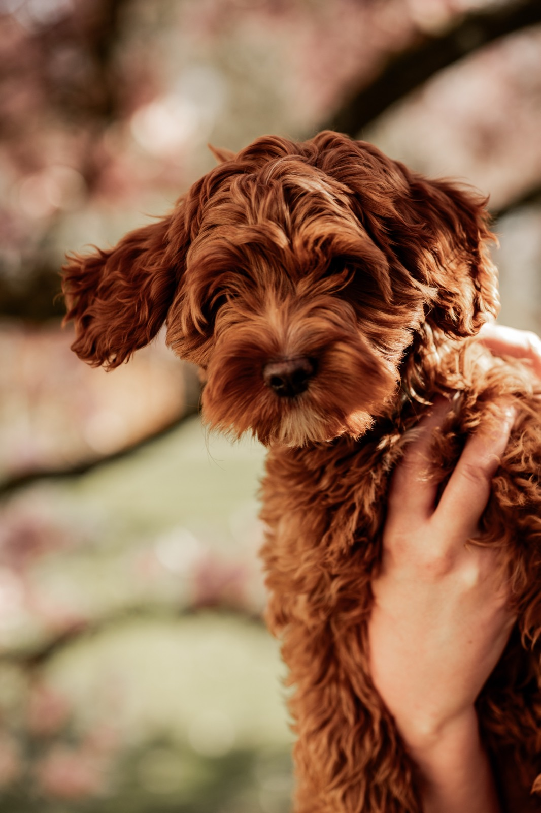
Photography by Kim Hildering
Onvoorwaardelijke connectie.
Rosie is een enthousiaste Australische labradoodle. Ze is geboren op 12 december 2024 bij Mischa's Doodles in Wamel en daarna in ons gezin komen wonen.
Rosie houdt van rennen, gek doen, vies worden, contact met mensen, aandacht, slapen en worstjes.
Ze weet heel goed wat ze wil en maakt ontzettend graag contact met mensen. Rosie oordeelt niet, ziet geen beperkingen of achtergrond, maar ziet puur de mens die voor haar staat.
Photography by Kim Hildering
Samen sterker.
Als ingespeeld DAI-team vullen wij elkaar aan: Anne-Frouk leest de mens en de situatie, Rosie leest de sfeer en het gevoel. Samen brengen wij rust, vertrouwen en verbinding op plekken waar dat het hardst nodig is.
Werken met een hond brengt iets in de hulpverlening wat geen andere therapie of interventie kan bieden:
De meerwaarde van onze samenwerking: waar woorden tekortschieten of het contact in de hulpverlening (nog) niet lukt, opent Rosie via haar aanwezigheid de weg naar een veilige ontmoeting.
Als flexibel DAI-team (Dog Assisted Interventions) zijn wij inzetbaar voor alle doelgroepen binnen het Leger des Heils. Onze expertise is verdeeld over twee specialismen.
We werken met verschillende fases tijdens de ontmoeting met een deelnemer: spiegel, begrenzer, motivator en beloning. De fases kunnen elkaar opvolgen, maar ook door elkaar heen lopen. Door gebruik te maken van deze fases kan de deelnemer zich ontwikkelen en kunnen we onderbouwen wat we aan het doen zijn.
Deze is tijdens alle fases aanwezig. Rosie communiceert vooral via lichaamstaal: houding, gedrag en energie. Ze reageert direct op wat er gebeurt in de ruimte. Als Rosie tijdens een ontmoeting een signaal afgeeft, kan ik dat als handler lezen en interpreteren. Zo krijg ik waardevolle informatie over de deelnemer en kan ik daarop inspelen.
Om iedereen zich veilig te laten voelen tijdens de ontmoeting maken we vooraf duidelijke afspraken over wat er wel en niet gaat gebeuren. Daarnaast is het belangrijk dat er een duidelijk begin en einde is aan de inzet van Rosie. Hier zorg ik als handler voor door elke ontmoeting op dezelfde manier te laten starten en eindigen.
Rosie kan tijdens de ontmoeting fungeren als motivator. Door haar aaibaarheid, lieve uitstraling en enthousiasme kan ze ervoor zorgen dat deelnemers tot dingen komen die ze niet doen als mensen dit van hen vragen — bijvoorbeeld naar buiten gaan of zichzelf verzorgen.
Rosie kan ook rustgevend werken doordat ze naast de deelnemer gaat liggen. Door de rust die ze uitstraalt en door haar te aaien komt de deelnemer ook tot rust en makkelijker tot praten. Rosie luistert oordeelloos; dit stimuleert de deelnemer tot een gesprek.
Rosie is ook een motivator doordat mensen uitzien naar een volgend bezoek, dingen voor haar kunnen gaan doen en dit de volgende keer aan ons kunnen laten zien.
Wanneer er groei en ontwikkeling ontstaat in het contact tussen Rosie en de deelnemer, kan Rosie ook een beloning worden. De deelnemer kan dan steeds meer zelfstandig ondernemen met Rosie en zijn of haar vaardigheden uitbreiden.
Vanuit deze zelfstandigheid kunnen we gaan kijken naar een alternatieve beloning, zodat de deelnemer de zelfstandigheid ook behoudt als Rosie niet meer komt.
Rosie en haar handler richten zich op de deelnemers van het Leger des Heils.
Rosie luistert, helpt en troost, en is oordeelloos. Ze geeft deelnemers meer zelfvertrouwen en helpt hen moeilijke gesprekken aan te gaan door haar rustgevende aanwezigheid. Rosie geeft onvoorwaardelijke liefde en versterkt zo het zelfvertrouwen van deelnemers.
Rosie is een labradoodle. Ze is mensgericht, enthousiast en heeft een lief karakter. Labradoodles zijn hypoallergeen, wat betekent dat mensen geen allergische reactie krijgen bij een ontmoeting. Daarnaast verhaart en kwijlt ze nauwelijks, waardoor de ruimte waarin de ontmoeting plaatsvindt nauwelijks vies wordt. Hierdoor is Rosie zeer geschikt om in te zetten bij ontmoetingen met deelnemers.
Rosie is ingezet bij een deelneemster die vooral inactief op de bank zit en niet tot actie komt. Een van haar doelen is dagbesteding; om haar in beweging te krijgen is Rosie ingezet. De handler geeft tijdens de ontmoeting aan dat Rosie uitgelaten "moet" worden, dus dat ze samen wel even naar buiten "moeten". Dit wakkert een zorgzame houding aan bij de deelneemster, die opeens letterlijk en figuurlijk in beweging komt. Samen met de handler laat ze Rosie een aantal keren uit. Dit zorgt voor meer zelfvertrouwen, onverwacht goede gesprekken met de handler en nieuwe inzichten in het karakter van de deelneemster.
Rosie is ingezet bij een deelnemer die in gesprekken blijft praten over wat er niet goed gaat in zijn leven. Hierdoor komen zijn persoonlijk begeleiders niet verder in de begeleiding en worden doelen niet bereikt, omdat hij niet wil praten over de toekomst en over hoe het nu verder moet. Tijdens de ontmoetingen met Rosie ontdooit de deelnemer zienderogen en praat hij vooral met Rosie. Hij vertelt waar hij mee zit, wat er gebeurt in zijn leven en wat hij eigenlijk graag zou willen. Dit geeft de begeleiders waardevolle informatie, waarmee zij de begeleiding kunnen aanpassen aan de wensen van de deelnemer.
Rosie is specifiek getraind om contact te maken in de eigen omgeving van de deelnemer. Aan de keukentafel werkt zij drempelverlagend, verlaagt ze spanning en stress, en maakt ze moeilijke onderwerpen makkelijker bespreekbaar.
Belangrijk hierbij is dat de ruimte waar de afspraak plaatsvindt veilig is voor Rosie en de handler. Mocht het voor de handler niet mogelijk zijn om de ruimte vooraf te inspecteren (bijvoorbeeld bij bemoeizorg of kwetsbare deelnemers), dan zullen de eerste ontmoetingen buiten, rondom de woning, plaatsvinden.
Binnen woongroepen, opvanglocaties en dagbestedingen kan Rosie zorgen voor ontspanning, afleiding en ontmoeting. Zij brengt sfeer, stimuleert onderling contact tussen deelnemers en biedt individuele aandacht en ontmoeting in een groepssetting.
In de groepssetting is het belangrijk dat deelnemers vrijwillig meedoen aan de activiteit en openstaan voor het feit dat Rosie deelneemt aan de ontmoeting.
Wij werken volgens de hoogste kwaliteitsstandaarden en de richtlijnen van de DAI Academy. Dit betekent voor jou:
Dog Assisted Interventions (DAI) is een verzamelnaam voor ondersteunende therapie en/of activiteiten met behulp van honden, in vier disciplines:
De DAI Academy staat voor samenwerking, eigenheid, kwaliteit en veiligheid — voor zowel mens als hond.
De DAI Academy bestaat uit drie opleidingen:
NB. Momenteel volgen Rosie en handler de Basisopleiding.
Rosie van pup tot DAI-hond in opleiding — onderweg, thuis en op de proeffoto's.
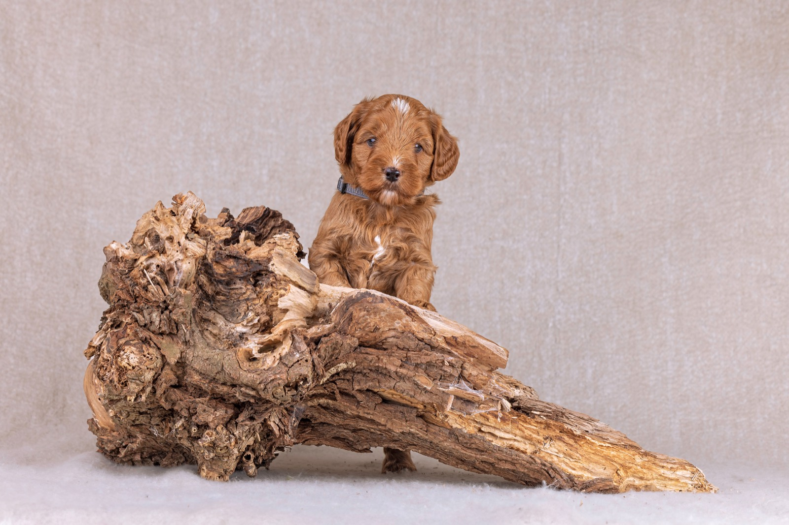
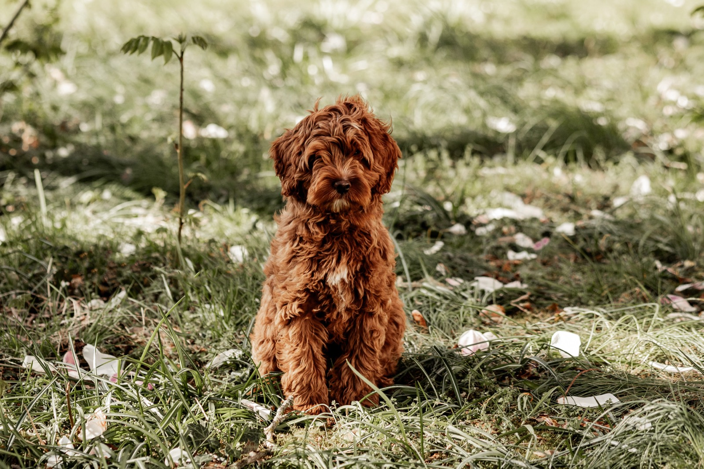
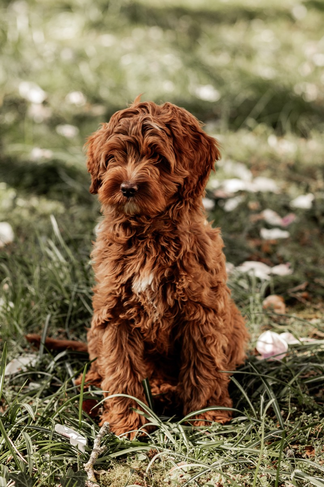
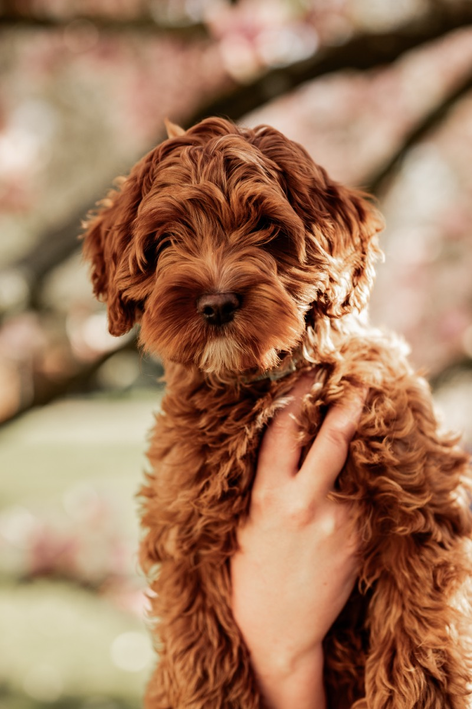
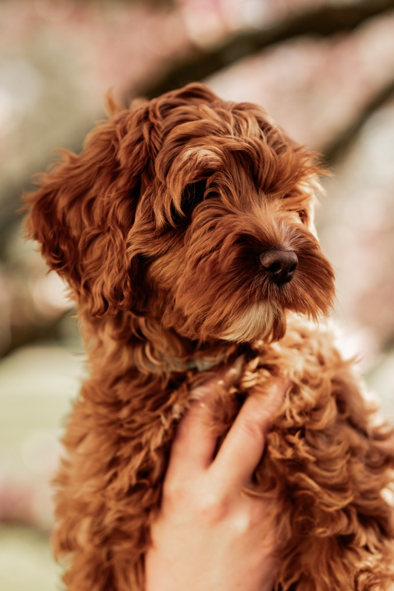
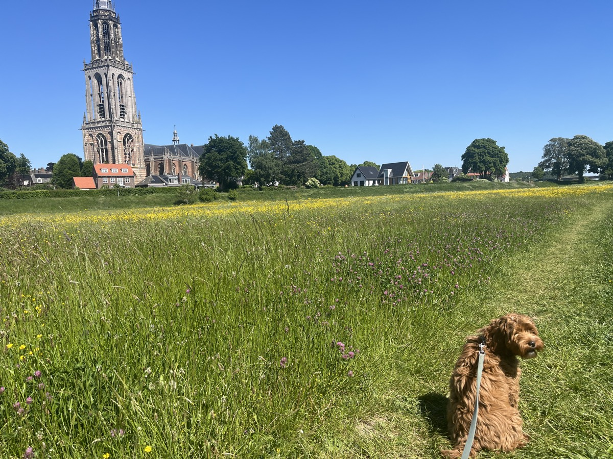
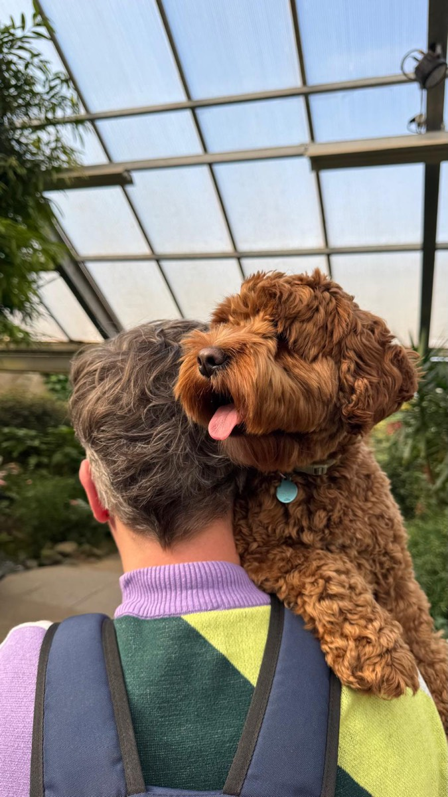
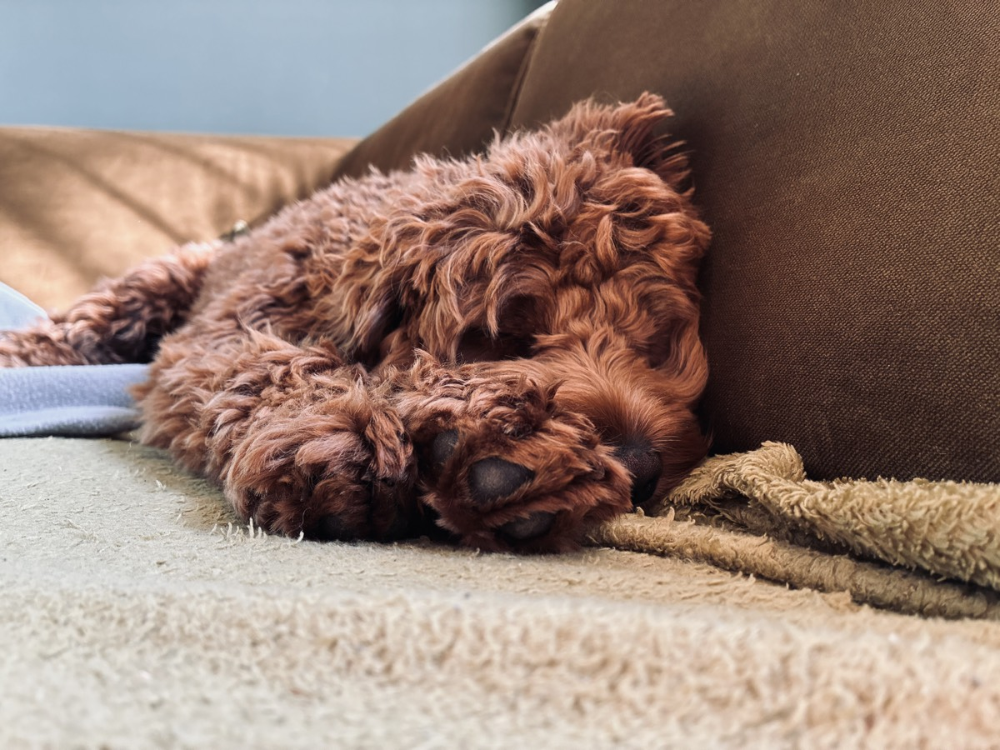
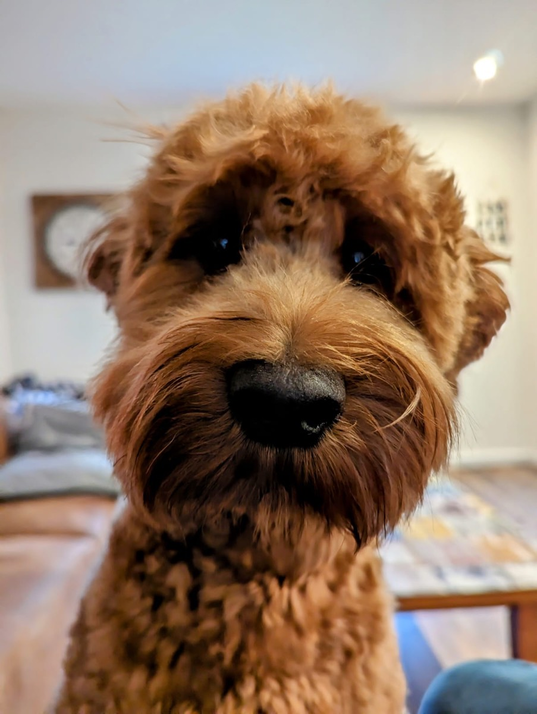
Studiofoto's: Photography by Kim Hildering